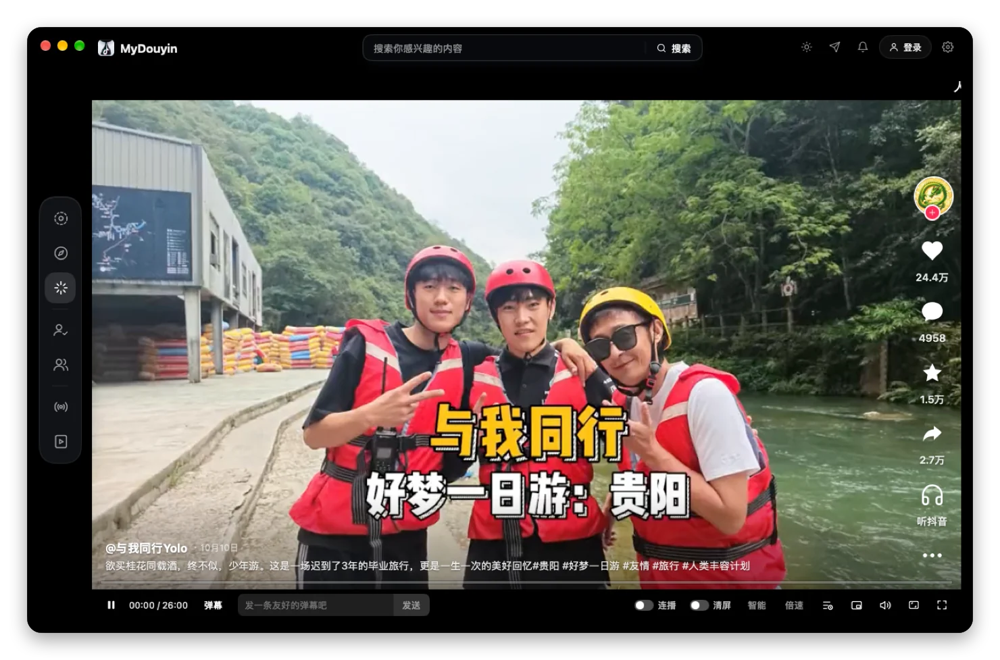
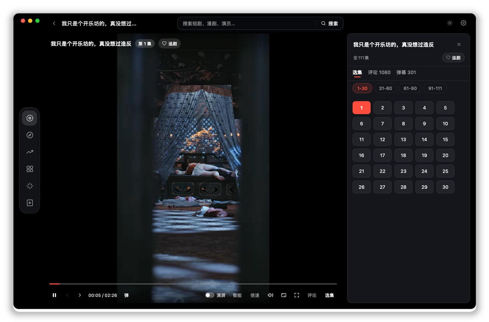

MACOS · AVPLAYERLAYER
~65MB
1080p 原生硬件解码内存
改用系统原生 AVPlayerLayer 视频层，跳过逐帧像素拷贝，解码进程 VTDecoderXPCService 物理内存由 ~180 MB 降至 ~65 MB。
基于 Go 与 MyGo 构建的开源桌面客户端，原生支持 macOS（Apple Silicon）与 Windows 10/11（x64）。无 Electron、无安卓模拟器、无 FFmpeg 或 HEVC 商店扩展，打开即可免登录浏览抖音与红果免费短剧、漫剧。




拒绝「感觉很快」的空话。以下指标均来自本仓库实测记录与性能分析报告，对比传统网页端、Electron 套壳与安卓模拟器。
改用系统原生 AVPlayerLayer 视频层，跳过逐帧像素拷贝，解码进程 VTDecoderXPCService 物理内存由 ~180 MB 降至 ~65 MB。
通过 AVURLAssetUsesNoPersistentCacheKey 禁用系统持久媒体磁盘缓存，彻底消除连看 8 条视频向 $TMPDIR/MediaCache 写入 ~300 MB 的损耗，保护 SSD 寿命。
仅点赞、评论、关注、发弹幕等写操作时拉起轻量签名页（对比完整网页 340–520 MB），闲置 10 秒自动销毁。
首轮 512 KiB 单次探测一次覆盖实测 252 KiB 的 moov 盒并缓存前缀零等待吐出，配合 75% 进度预热下一集与 256 KiB Windows 点播头内存缓存。
Windows 播放直走系统 Media Foundation，红果签名 HEIC 封面内置纯 Go h265/heic 解码并转存 JPEG 缓存，告别微软商店付费 HEVC 扩展与模拟器。
不妥协于跨平台 WebView 最低公约数，在 macOS 与 Windows 上分别接入各自最轻量的硬件媒体管线。
一表看清在电脑端同时刷抖音与追红果短剧的真实差异。
| 对比维度 | MyDouyin · MyHongguo | 浏览器网页版 | Electron 客户端 / 安卓模拟器 |
|---|---|---|---|
| 平台覆盖 | 单窗口集成抖音 + 红果短剧，⌘1 / ⌘2 一键切换 | 抖音靠标签页；红果无完整桌面网页版 | 单一平台为主，看红果需跑整套安卓虚拟机 |
| 启动首屏 | 引力场居中搜索 + 本地快照秒开，不强制自动连播 | 打开即强制播放推荐流 | 冷启动慢，后台常驻多个高内存进程 |
| 内存与写盘 | macOS 约 65 MB 零写盘；签名页 80 MB 闲置 10s 释放 | 多标签与缓存随浏览持续暴涨 | 常驻 500 MB–2 GB+，风扇与磁盘写入明显 |
| 红果 HEIC 封面 | macOS ImageIO / Windows 内置纯 Go 解码，开箱即显 | 依赖浏览器 HEIC 兼容性 | 需额外商店扩展或完整 Android 运行环境 |
| 隐私与更新 | 零遥测、全数据本地存储、应用内签名增量热更新 | 受限于浏览器环境 | 频繁全量包更新，后台服务多 |
安装包均由 GitHub Releases 分发并附带 SHA256SUMS 校验和，后续版本支持应用内签名增量热更新。
xattr -dr com.apple.quarantine /Applications/MyDouyin.app
拖入「应用程序」后运行上方命令，或在「系统设置 › 隐私与安全性」点击「仍要打开」。后续新版本可在窗口右上角胶囊一键增量升级。
irm https://github.com/margbug01/MyDouyin/releases/latest/download/install.ps1 | iex
开箱即用，无需 FFmpeg 或微软商店 HEIF/HEVC 扩展。若触发 SmartScreen 提示，点击「更多信息 › 仍要运行」；Windows N / KN 精简版需安装系统可选功能 Media Feature Pack。
MyDouyin 内置完整的 MyHongguo 红果短剧模式，原生运行在 macOS（Apple Silicon）和 Windows 10/11（x64）上，不需要安卓模拟器或手机投屏。打开后点击左上角品牌胶囊或按 ⌘2 / Ctrl+2 即可切换，支持双星引力场、发现、榜单、分类、上新、搜索、剧集详情、弹幕、评论与本地断点续播。
可以。MyHongguo 红果短剧模式全程免登录匿名运行，追剧列表和每集进度保存在本机。MyDouyin 抖音模式免登录即可浏览引力场精选、推荐、分类、搜索、作者主页与公开直播间；仅在点赞、收藏、关注、发评论、发弹幕或同步历史时需要扫码登录。
不需要。Windows 版视频直接调用系统 Media Foundation 硬件解码，不附带 FFmpeg；红果短剧的签名 HEIC 封面通过内置纯 Go h265/heic 解码器直接解码并转为本地 JPEG 缓存，无需商店 HEIF/HEVC 扩展。仅 Windows N / KN 精简版需安装系统可选功能 Media Feature Pack。
不会。macOS 版本对 AVFoundation 显式设置 AVURLAssetUsesNoPersistentCacheKey，只保留少量内存预读，不再把整段 MP4 写入 $TMPDIR/MediaCache；本地封面缓存也带自动上限清理。
在右上角「设置 › 红果短剧 (MyHongguo)」中确认「绕过系统代理直连」已开启（默认开启）。若匿名设备触发风控限流，点击「重置匿名设备」即可重新生成身份，也支持配置自定义远端签名服务与 Token。
所有个人数据仅存在本机标准应用配置目录中（macOS 为 ~/Library/Application Support/Douyin 与 ~/Library/Application Support/mydouyin，Windows 为 %APPDATA% 对应目录），应用零遥测、不上传任何统计信息，热更新和覆盖安装均保留数据。